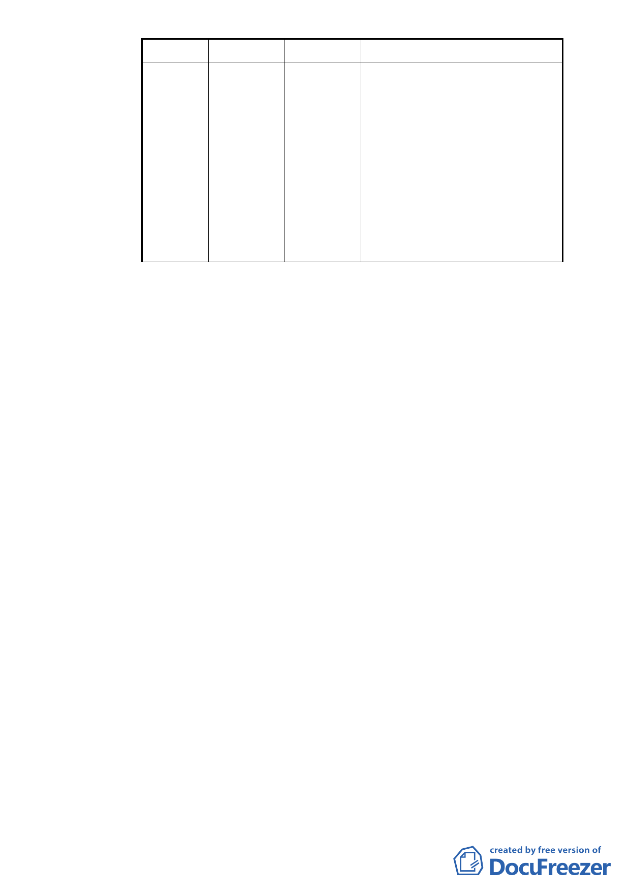

分區別
第三種
商業區
(特)
建蔽率(%)
45
容積率(%)
225
備註
另計畫區原 92 年 1 月 9 日公告實
施細部計畫規定舊建築物修建、改
建部分（約佔商三（特）面積 14.1
％），得不計入建蔽率之原則下，
放寬建蔽率為 60％。但舊建物擅予
拆除時，則限作空地使用，同時建
蔽率回復為 45％。本基地如因依本
計畫案之相關規定致容積無法充
分使用時，經臺北市都市設計及土
地使用開發許可審議委員會審議
通過，得於建蔽率 5％範圍內調配
作有頂蓋之開放空間使用。
(2)本案除都市更新容積獎勵以外，申請臺北好好看之容積
獎勵與其他各項依法申請之容積獎勵總額，以不超過原
分區法定容積率之1.5倍為上限。
(3)本案建築基地得適用「徵求參與『促進都市再生 2010
年臺北好好看』開發計畫案」之「廣場式開放空間」、「其
他具形塑都市意象、創造特殊都市生活體驗空間等」二
項容積獎勵之審查機制辦理。
(4)使用項目：本案建築物允許使用項目依據臺北市土地使
用分區管制規則第三種商業區規定辦理。
(5)其他：
A. 本計畫區公共設施用地得適用「都市計畫公共設施用
地多目標使用辦法」規定。
B. 本案新建區部分，取消原有建築設計限高30公尺規
定，依臺北市土地使用分區管制規則規定辦理，可體
驗區高度限制仍依原都市計畫規定辦理。
C. 取消本案原細部計畫陸、一：「不得適用都市更新條例
第四十四條第一項第一、二、四、五各款之規定給予
建築容積獎勵」規定，依都市更新條例規定辦理。
D. 為提供士林夜市周邊停車需求，取消本案原細部計畫
陸、四：「本計畫區不適用『台北市建築物增設室內公
- 29 -